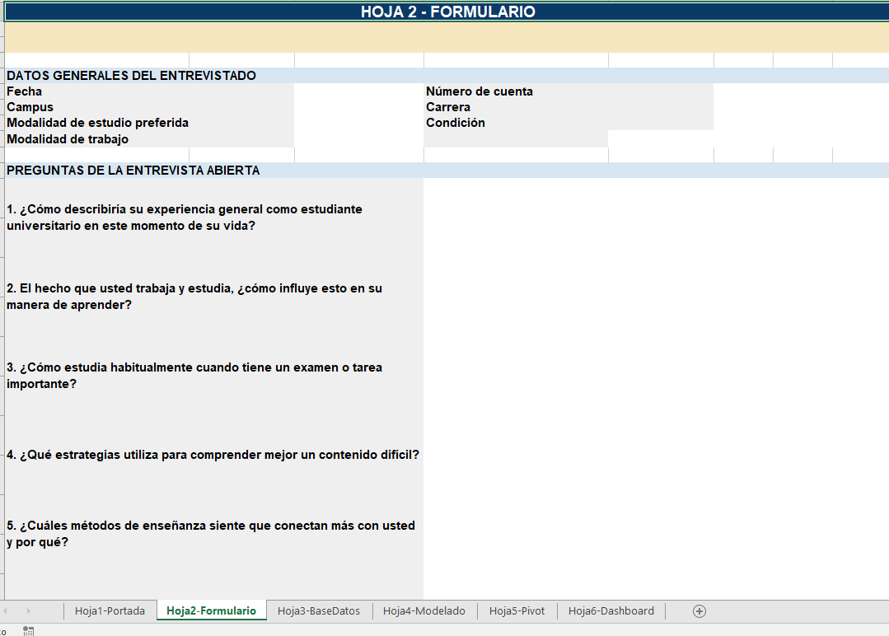
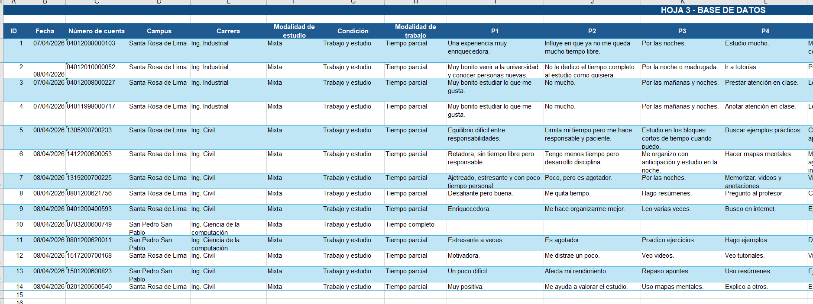
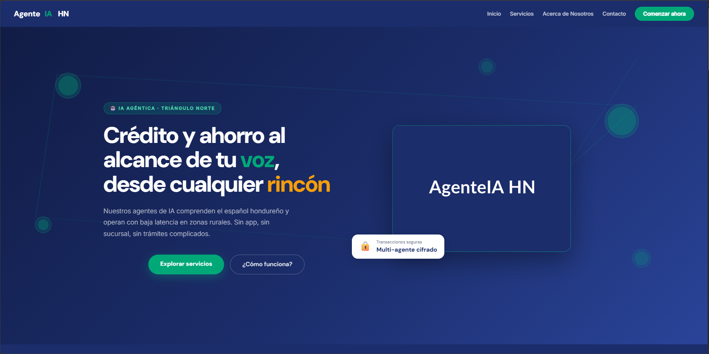
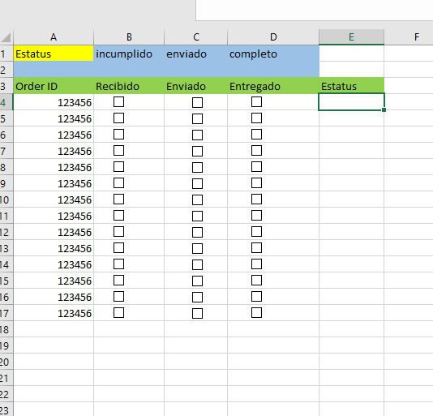

Estudiante de Ingeniería en Informática
Universidad Católica de Honduras — Roatán
Ver mis proyectosNombre: Bryana Nicole Kirkconnell Hunter
N° de cuenta: 1103200100203
Ubicación: Roatán, Honduras
Edad: 24 años
Colores favoritos: Rojo y negro
Soy estudiante de la UNICAH, vivo en Roatán. Me apasiona la tecnología y el desarrollo de soluciones digitales que generen impacto real.


Formulario de entrevista universitaria con portada, base de datos, modelado, tabla dinámica y dashboard en Excel. Recoge datos de estudiantes que trabajan y estudian simultáneamente.

Landing page sobre una plataforma fintech hondureña con temática de inteligencia artificial, que presenta servicios de crédito y ahorro accesibles desde cualquier rincón del país, con enfoque en zonas rurales.

Hoja de seguimiento de órdenes con sistema de estatus visual (incumplido, enviado, completo) mediante checkboxes y formato condicional por colores para control logístico.